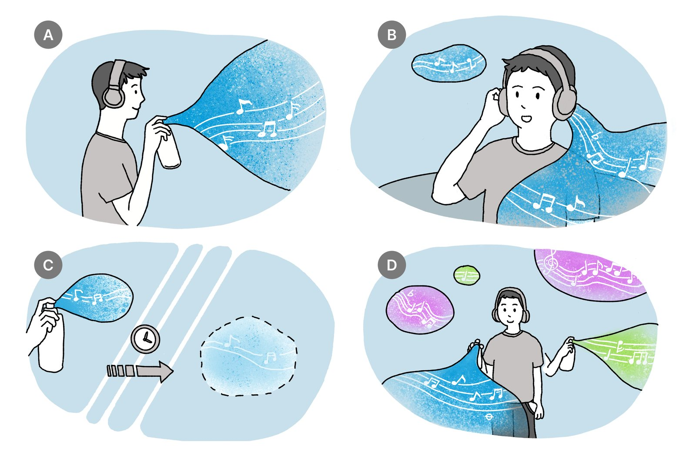
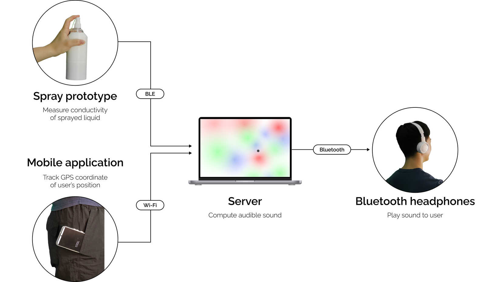
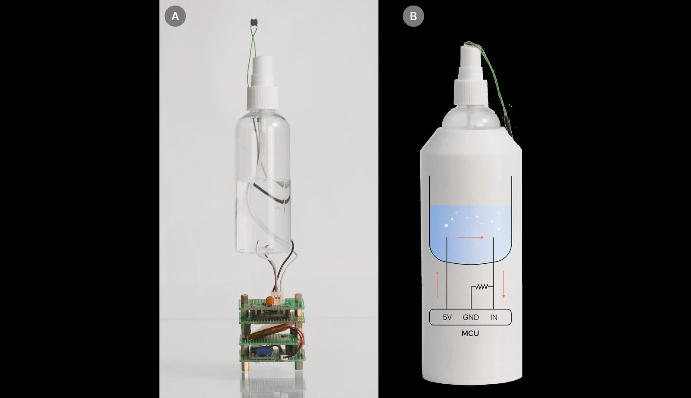
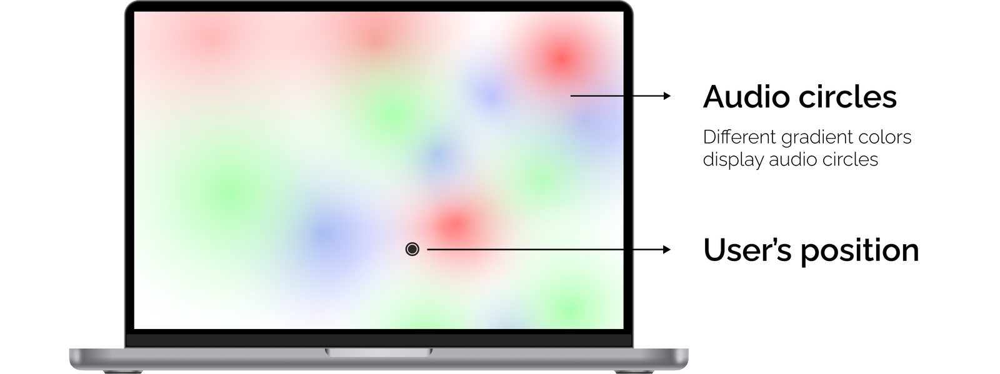
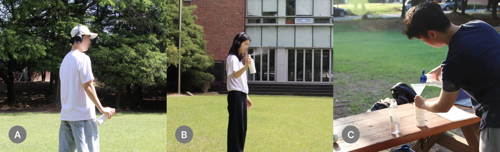
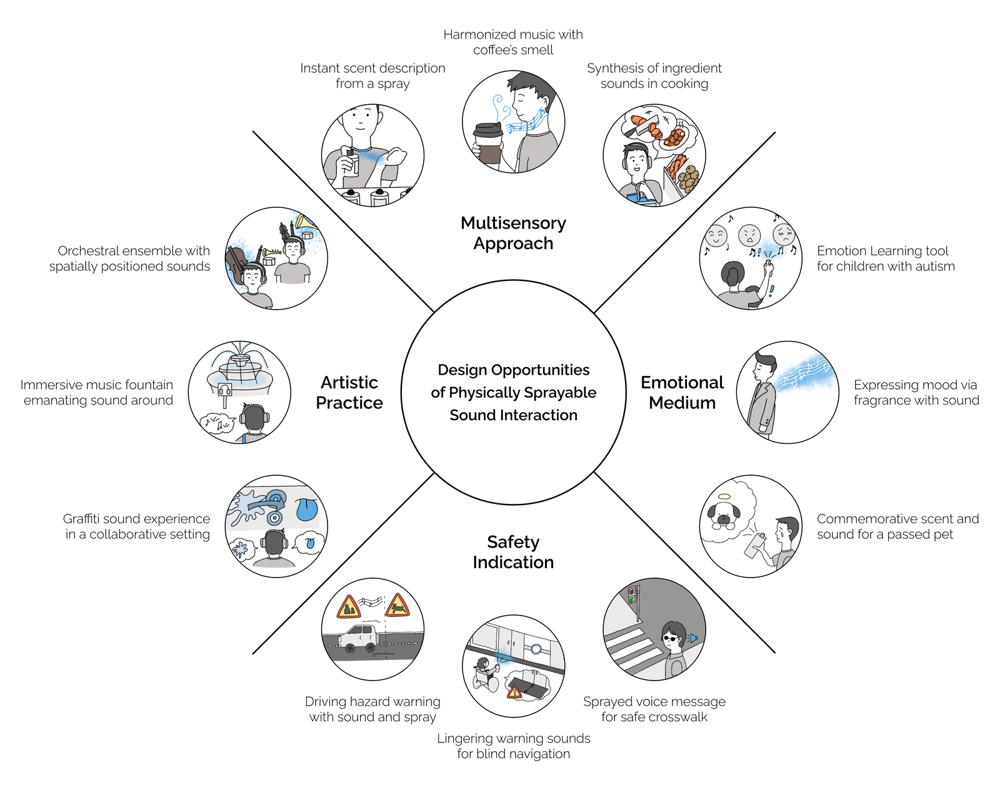
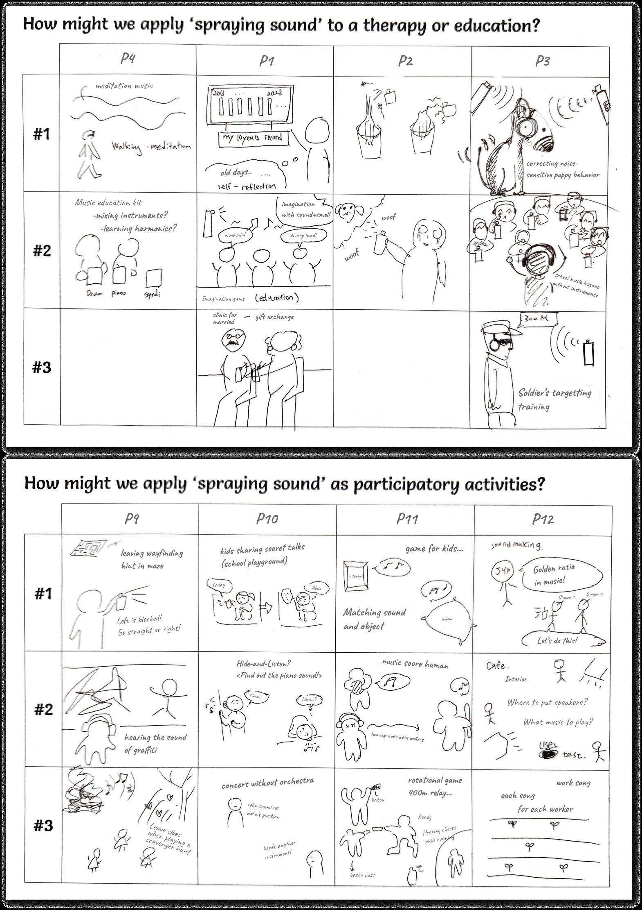

논문 · CHI '25 · 소닉 인터랙션 디자인
Sprayable Sound — 소리를 공간에 뿌리다 (SoundMist)
향수가 공기 중에 흩어졌다 사라지듯, 액체를 물리적으로 분무해 소리를 공간에 띄우는 인터랙션. 분무한 소리는 위치에 머물다 시간이 지나면 옅어져 사라지고, 거리에 따라 음량이 달라진다. 액체의 전기전도도에 따라 다른 소리가 나며, 여러 소리를 공간에서 섞을 수도 있다.
전종익 · 이창희 (KAIST 산업디자인학과). CHI '25 (Yokohama). 소리를 "데이터"가 아니라 물질·덧없는 존재로 다루는 소닉 인터랙션.
개념분무하는 소리

- 무엇을
- 눈에 보이지 않는 소리를 공간 속 물질처럼 다룬다. 분무하면 그 자리에 덧없는 소리 source가 생기고, 가까이 가면 커지고 멀어지면 작아지며(향수의 농도처럼), 시간이 지나면 흩어져 사라진다.
- 어떻게
- 액체의 전기전도도가 소리의 종류를 결정 — 농도가 다른 베이킹소다 용액 3종을 서로 다른 소리에 매핑. 스프레이 안 전극에 전류를 흘려 돌아오는 전압으로 전도도를 측정한다.
- 우리와 관계
- 측정값(전도도) → 출력(소리) 의 명시적 매핑 구조가 우리 매핑표와 동일한 사고방식. "물리량 하나 → 감각 하나"를 규칙으로 잇는 방식의 선례.
시스템측정 → 계산 → 시각화 → 재생



- 우리와 관계
- 서버 화면이 바로 "소리를 시각으로" — 소리 종류=색(hue), 공간 위치=좌표(position), 음량=농도. 우리가 만드는 시각 변수 매핑(모음→위치, 세기→크기)과 같은 어휘다.
사용자 연구소리를 뿌릴 때의 4가지 경험N=11

- ① 물질성
- 흩어지는 액체 입자가 만드는 소리의 물질감 — 소리가 만질 수 있는 무언가처럼 느껴짐.
- ② 얽힘
- 액체마다 다른 소리가 얽혀 있음 — 물질과 소리가 한 몸처럼 연결.
- ③ 떠 있는 착각
- 소리가 공간에 잠시 떠 있다는 착각적 지각 — 위치를 가진 소리.
- ④ 섞는 즐거움
- 여러 소리를 섞으며 얻는 놀이적 즐거움.
- 우리와 관계
- "소리에 물질성·위치·지속을 부여"하는 관점 — 우리가 목소리를 글자라는 시각 물질로 옮길 때 같은 축(물질감·길이·잔상)을 쓴다.
아이디어 워크숍디자인 기회 4갈래N=12


- 다중감각
- 소리를 다른 감각(향 등)과 함께 다루는 크로스모달 접근.
- 예술적 실천
- 음악 분수·그래피티 사운드 등 공간 사운드 작품.
- 감정 매개
- 향수처럼 기분·기억을 소리로 표현 (떠난 반려동물의 소리 등).
- 안전 지시
- 횡단보도·시각장애 내비 등 공간에 남는 경고음.